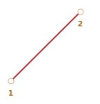

CSS-анимации
CSS позволяет создавать простые анимации без использования JavaScript.
JavaScript может быть использован для управления такими CSS-анимациями. Это позволяет делать более сложные анимации, используя небольшие кусочки кода.
CSS позволяет создавать простые анимации без использования JavaScript.
JavaScript может быть использован для управления такими CSS-анимациями. Это позволяет делать более сложные анимации, используя небольшие кусочки кода.
Идея CSS-переходов проста: мы указываем, что некоторое свойство должно быть анимировано, и как оно должно быть анимировано. А когда свойство меняется, браузер сам обработает это изменение и отрисует анимацию.
Все что нам нужно, чтобы начать анимацию - это изменить свойство, а дальше браузер сделает плавный переход сам.
Например, CSS-код ниже анимирует трехсекундное изменение background-color:
.animated {
transition-property: background-color;
transition-duration: 3s;
}Теперь, если элементу присвоен класс .animated, любое изменение свойства background-color
будет анимироваться в течение трех секунд.
Нажмите кнопку ниже, чтобы анимировать фон:
<button id="color">Нажми меня</button> <style>#color { transition-property: background-color; transition-duration: 3s; }</style><script>color.onclick = function() { this.style.backgroundColor = 'red'; };</script>
Существует 4 свойства для описания CSS-переходов:
transition-property - свойство перехода.
transition-duration - продолжительность перехода.
transition-timing-function - временная функция перехода
transition-delay - задержка начала перехода
Далее мы рассмотрим их все, а сейчас еще заметим, что есть также общее свойство transition,
которое позволяет задать их одновременно в последовательности: property duration timing-function delay,
а также анимировать несколько свойств одновременно.
Например, у этой кнопки анимируются два свойства color и font-size одновременно:
<button id="growing">Нажми меня</button><style>#growing { transition: font-size 3s, color 2s; }</style><script>growing.onclick = function() { this.style.fontSize = '36px'; this.style.color = 'red'; };</script>
Теперь рассмотрим каждое свойство анимации по отдельности.
В transition-property записывается список свойств, изменения в которых необходимо анимировать,
например: left, margin-left, height, color.
Анимировать можно не все свойства, но
многие из них.
Значение свойства all означает «анимируй все свойства».
В transition-duration можно определить сколько времени займет анимация. Время должно быть
задано в формате времени CSS:
в секундах s или миллисекундах ms.
В transition-delay можно определить задержку перед началом анимации. Например, если
transition-delay: 1s, тогда анимация начнется через 1 секунды после изменения свойства.
Отрицательные значения также допустимы. В таком случае анимация начнется с середины. Например, если
transition-duration равно 2s, а transition-delay - -1s,
тогда анимация займет одну секунду и начнется с середины.
Здесь приведен пример анимации, сдвигающей цифры от 0 до 9 с использованием
CSS-свойства transform со значением translate:
Свойство transform анимируется следующим образом:
#stripe.animate {
transform: translate(-90%);
transition-property: transform;
transition-duration: 9s;
}В примере выше JavaScript-код добавляет класс .animate к элементу, после чего начинается анимация:
stripe.classList.add('animate');Можно начать анимацию «с середины», с определенного числа, например, используя отрицательное значение
transition-delay, соответствующий необходимому числу.
Если вы нажмете цифру ниже, то анимация начнется с последней секунды:
Временная функция описывает, как процесс анимации будет распределен во времени. Будет ли она начата медленно и затем ускорится или наоборот.
На первый взгляд это очень сложное свойство, но оно становится понятным, если уделить ему немного времени.
Это свойство может принимать два вида значений: кривую Безье или количество шагов. Давайте начнем с кривой Безье, как с наиболее часто используемой.
Временная функция может быть задана, как Кривая безье с 4 контрольными точками, удовлетворяющими условиям:
Первая контрольная точка: (0, 0).
Последняя контрольная точка: (1, 1).
Для промежуточных точек значение x должно быть 0...1, значение y
может принимать любое значение.
Синтаксис для кривых Безье в CSS: cubic-bezier(x2, y2, x3, y3). Нам необходимо задать только
вторую и третью контрольные точки, потому что первая зафиксирована со значением (0, 0) и четвертая
- (1, 1).
Временная функция описывает то, насколько быстро происходит анимация во времени.
Ось x - это время: 0 - начальный момент, 1 - последний момент
transition-duration.
Ось y указывает на завершение процесса: 0 - начальное значение свойства,
1 - конечное значение.
Самым простым примером анимации является равномерная анимация с линейной скоростью. Она может быть задана
с помощью кривой cubic-bezier(0, 0, 1, 1).
Вот как выглядит эта «кривая»:
Как мы видим, это прямая линия. Значению времени (x) соответствует значение завершенности
анимации (y), которое равномерно изменяется от 0 до 1.
В примере нижу поезд «едет» слева направо с одинаковой скоростью (нажмите на поезд):

В свойстве transition указана следующая кривая Безье:
.train {
left: 0;
transition: left 5s cubic-bezier(0, 0, 1, 1);
/* JavaScript устанавливает свойство left */
}А как показать замедляющийся поезд?
Мы можем использовать другую кривую Безье: cubic-bezier(0, 0.5, 0.5, 1).
Ее график:

Как мы видим, анимация начинается быстро: кривая поднимается вверх, и затем все медленнее и медленнее.
Ниже временная функция в действии (нажмите на поезд):
CSS:
.train {
left: 0;
transition: left 5s cubic-bezier(0, 0.5, 0.5, 0);
/* JavaScript устанавливает свойство left */
}Есть несколько встроенных обозначений кривых Безье: linear, ease, easy-in,
easy-out, easy-in-out.
linear это короткая запись для cubic-bezier(0, 0, 1, 1) - прямой линии, которую
мы видели раньше.
Другие названия - это также сокращения для других cubic-bezier:
easy* |
easy-in |
easy-out |
easy-in-out |
|---|---|---|---|
(0.25, 0.1, 0.25, 1) |
(0.42, 0, 1, 1) |
(0, 0, 0.58, 1) |
(0.42, 0, 0.58, 1) |
 |
 |
 |
 |
* - используется по умолчанию, если не задана временная функция.
Для того, чтобы замедлить поезд, мы можем использовать easy-out:
.train {
left: 0;
transition: left 5s easy-out;
/* transition: left 5s cubic-bezier(0. 0.5, 0.5, 1); */
}Но получившийся результат немного отличается.
Кривая Безье может заставить анимацию «выпрыгивать» за пределы диапазона.
Контрольные точки могут иметь любые значения по оси y: отрицательные или сколько угодно большие.
В таком случае кривая Безье будет скакать очень высоко или очень низко, заставляя анимацию выходить за ее
нормальные пределы.
В приведенном ниже примере код анимации:
.train {
left: 100px;
transition: left 5s cubic-bezier(0.5, -1, 0.5, 2);
}Свойство left будет анимироваться от 100px до 400px.
Но когда вы нажмете на поезд, вы увидите следующее:
Сначала поезд едет назад: left станет меньше, чем 100px.
Затем он поедет вперед, немного дальше, чем 400px.
И затем вернется назад в значение 400px.
Если мы взглянем на кривую Безье из примера, становится понятно поведение поезда.

Мы вынесли координату y для первой опорной точки ниже нуля и выше единицы для третьей опорной
точки, поэтому кривая вышла за пределы «обычного» квадрата. Значения y вышла из «стандартного»
диапазона 0...1.
Как мы знаем, ось y измеряет «завершенность процесса анимации». Значение y = 0
соответствует начальному значению анимируемого свойства и y = 1 - конечному значению. Таким
образом, y < 0 делает значение свойства left меньше начального значения и
y > 1 - больше конечного.
Это, конечно, «мягкий» вариант. Если значение y будут -99 и 99, то
поезд будет гораздо сильнее «выпрыгивать» за пределы.
Как сделать кривую Безье необходимую для конкретной задачи? Существует множество инструментов.
К примеру, мы можем сделать это на сайте https://cubic-bezier.com/.
Браузерные инструменты разработчика также имеют специальную поддержку для создания кривых Безье в CSS:
Откройте инструменты разработчика при помощи F12.
Выберите вкладку Elements, затем обратите внимание на под-панель Styles
в правой стороне.
Свойство CSS со словом cubic-bezier будут иметь иконку перед этим словом.
Кликните по иконке, чтобы отредактировать кривую.
Временная функция steps(количество шагов, [start/end]) позволяет разделить анимацию на шаги.
Давайте рассмотрим это на уже знакомом нам примере с цифрами.
Ниже представлен список цифр, без какой-либо анимации, которые мы будем использовать в качестве основы.
0123456789
В HTML вереница цифр заключена в <div id="digits"> фиксированной длины:
<div id="digits">
<div id="stripe">0123456789</div>
</div>Div-элемент #digits имеет фиксированную ширину и границу, поэтому он выглядит как красное окно.
Мы сделаем таймер: цифры будут появляться одна за другой, дискретно.
Чтобы добиться этого, мы скроем #stripe за пределами #digits, используя
overflow: hidden, а затем, шаг за шагом будем двигать #stripe влево.
Всегда будет 9 шагов, один шаг для каждой цифры:
#stripe.animate {
transform: translate(-90%);
transition: transform 9s steps(9, start);
}Первый аргумент временной функции steps(9, start) - количество шагов. Трансформация будет
разделена на 9 частей (10% каждая). Временной интервал также будет разделен на 9 частей, таким образом
свойство transition: 9s обеспечивает нам 9 секунд анимации, что дает по 1 секунде на цифру.
Вторым аргументом является одно из ключевых слов: start или end.
start - означает, что в начале анимации нам необходимо перейти на первый шаг немедленно.
В действии:
Щелчок по цифре немедленно изменяет ее на 1 (первый шаг), а затем изменяется в начале следующей
секунды.
Анимация будет происходить так:
0s - -10% (первое изменение в начале первой секунды, сразу после нажатия).
1s - -20%.
...
8s - -90%.
(На протяжении последней секунды отображается последнее значение).
Здесь первое изменение было немедленным из-за start в steps.
Альтернативное значение end означало бы, что изменения нужно применять не в начале, а в конце
каждой секунды.
Анимация будет происходить так:
0s - 0.
1s - -10% (первое изменение произойдет в конце первой секунды).
2s - -20%.
...
9s - -90%
Пример step(9, end) в действии (обратите внимание на паузу перед первым изменением цифры):
Существуют также некоторые заранее определенные сокращения для steps(...):
step-start - то же самое, что steps(1, start). Оно означает, что анимация
начнется сразу и произойдет в один шаг. Таким образом, она начнется и завершится сразу, как будто и нет
никакой анимации.
step-end - то же самое, что steps(1, end): выполнит анимацию за 1 шаг
в конце transition-duration.
Таким значения используются редко, потому что это не совсем анимация, а точнее будет сказать одношаговые изменения. Мы упоминаем их здесь для полноты картины.
Когда завершается анимация, срабатывает событие transitionend.
Оно широко используется для выполнения действий после завершения анимации, а также для создания последовательности анимаций.
Например, корабль в приведенном ниже примере начинает плавать туда и обратно по клику, каждый раз все дальше и дальше вправо:
Анимация начинается с помощью функции go, которая вызывается каждый раз снова, когда переход
заканчивается и меняется направление.
boat.onclick = function() {
let times = 1;
function go() {
if (times % 2) {
// Плыть вправо
boat.classList.remove('scale');
boat.style.marginLeft = `${times * boat.getBoundingClientRect().width}px`;
else {
// Плыть влево
boat.classList.add('scale');
boat.style.marginLeft = `0px`;
}
}
go();
boat.addEventListener('transitionend', function(event) {
if (event.propertyName === 'margin-left') {
times++;
go();
}
});
};Объект события transitionend содержит ряд полезных свойств:
event.propertyName - имя свойства, анимация которого завершилась. Может быть полезным,
если мы афишируем несколько свойств.
event.elapsedTime - время (в секундах), которое заняла анимация, без учета
transition-delay.
Мы можем объединить несколько простых анимаций вместе, используя CSS-правило @keyframes.
Оно определяет «имя» анимации и правила: что, когда и где анимировать. После этого можно использовать
свойство animation, чтобы назначить анимацию на элемент и определить ее дополнительные параметры.
Ниже приведен пример с пояснениями:
<div class="progress"></div> <style>@keyframes go-left-right { /* Объявляем имя анимации: "go-left-right" */ from {left: 0px;} /* От: left: 0px */ to {left: calc(100% - 50px);} /* До: left: 100% - 50px */ } .progress { animation: go-left-right 3s infinite alternate; /* Применить анимацию "go-left-right" на элементе Продолжительностью 3 секунды Количество раз: бесконечно (infinite) Менять направление анимации каждый раз (alternate) */ position: relative; border: 2px solid green; width: 50px; height: 20px; background: lime; }</style>
Существует множество статей про @keyframes, а также
детальная спецификация.
Скорее всего, вам нечасто понадобится @keyframes, разве что на вашем сайте все постоянно
в движении.
CSS-анимации позволяют плавно, или не очень, менять одно или несколько свойств.
Они хорошо решают большинство задач по анимации. Также мы можем реализовать анимации через JavaScript, более подробно об этом - в следующей главе.
Ограничения CSS-анимаций в сравнении с JavaScript-анимациями:
| Достоинства | Недостатки |
|---|---|
|
|
Большинство анимаций может быть реализовано с использованием CSS, как описано в этой главе. А событие
transitionend позволяет запускать JavaScript после анимации, поэтому CSS-анимации прекрасно
интегрируются с кодом.
Но в следующей главе мы рассмотрим некоторые JavaScript-анимации, которые позволяют решать более сложные задачи.